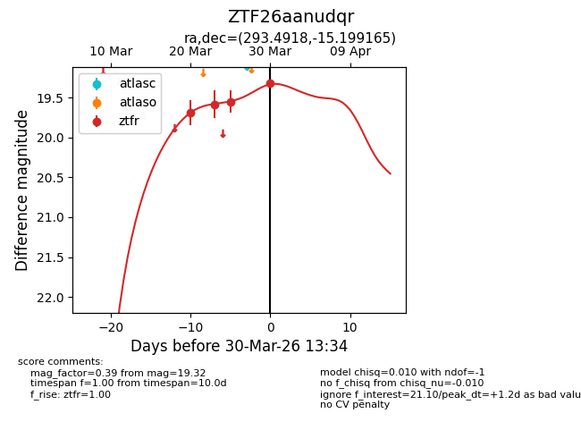
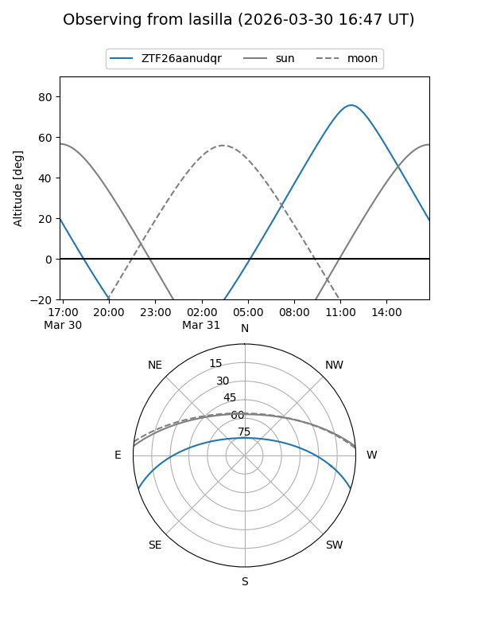
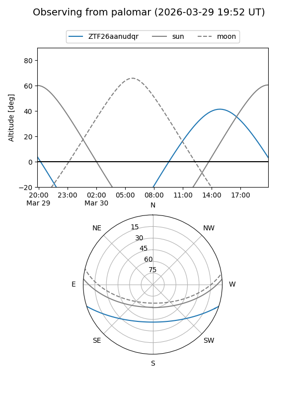
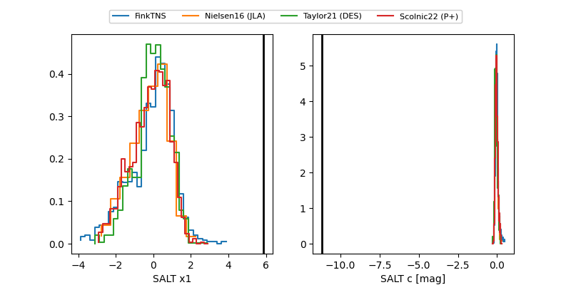

ZTF26aanudqr
Target ZTF26aanudqr at 2026-03-30 13:38
Aliases and brokers:
FINK: link
Lasair: link
ALeRCE: link
alt names
ZTF26aanudqr (ztf,fink_ztf)
Coordinates:
equatorial (ra, dec) = 293.4918,-15.19916
equatorial (HMS+DMS) = 19:33:58.02,-15:11:56.99
galactic (l, b) = (23.8186,-16.14153)
Flags:
Photometry:
last ztfr=19.32
4 ztfr detections
Lightcurve

Visibility


Additional plots
